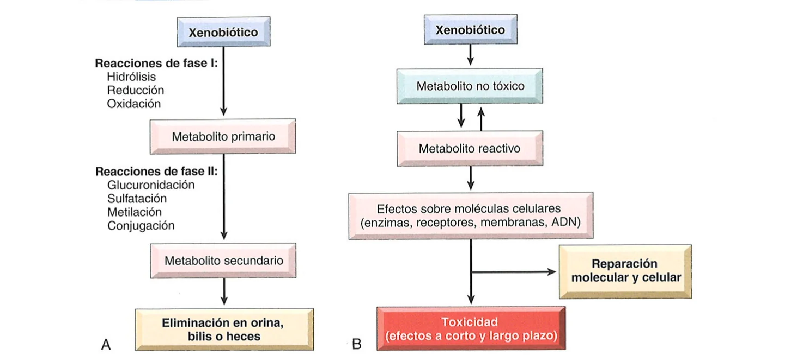
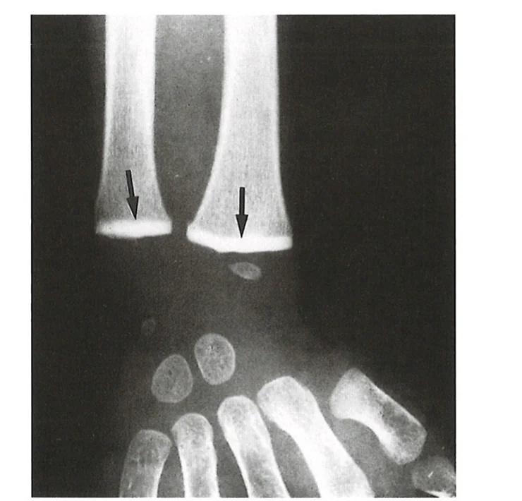
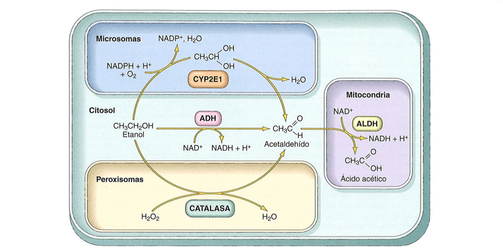
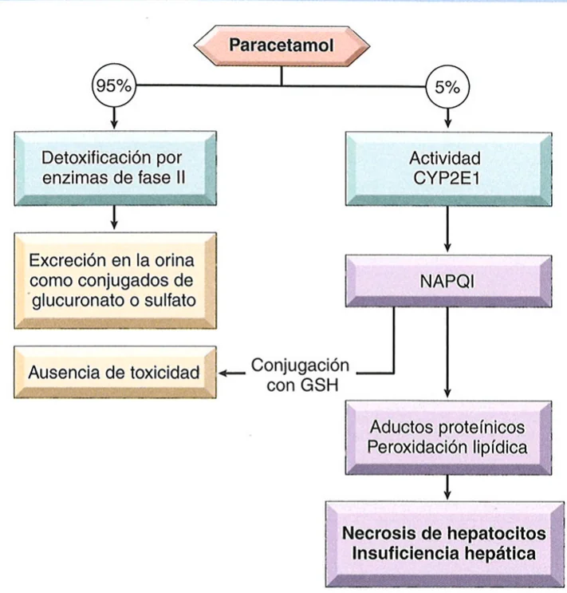
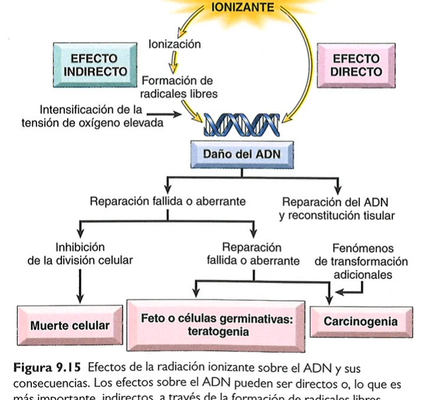
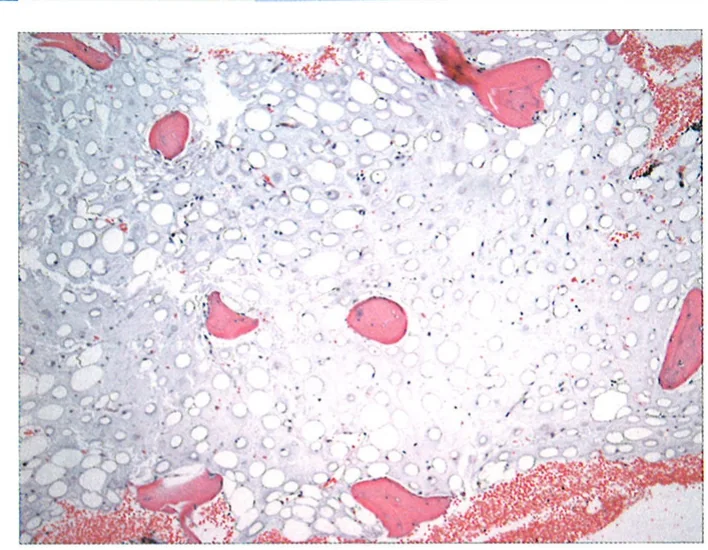
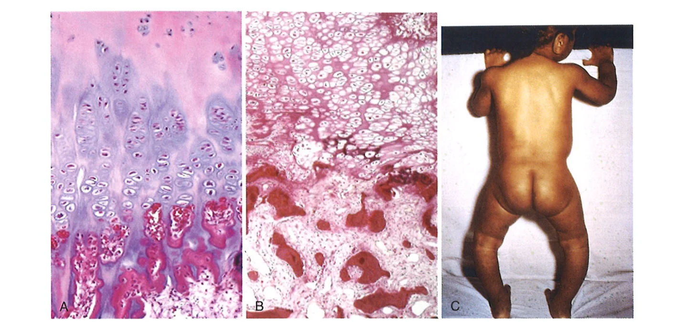

Qué cubre esta guía
Este resumen del Certamen 1 se redactó antes de adoptar la cita por página; se publica sin reescribirlo. El Manual del Certamen 1 incluye el índice tema-clase-Robbins y las fuentes.
Lo esencial en 60 segundos
- Los xenobióticos se metabolizan en fase I (citocromo P-450) y fase II (conjugación); el metabolismo puede detoxificar o activar metabolitos tóxicos (tetracloruro de carbono, benzo[a]pireno).
- El CO tiene 200 veces más afinidad por la hemoglobina: carboxihemoglobina que no transporta O2, hipoxia, lesión de ganglios basales y color rojo cereza.
- Metales: plomo (encefalopatía, neuropatía, anemia con punteado basófilo), mercurio (Minamata), arsénico (cáncer) y cadmio (EPOC, itai-itai).
- El tabaco causa el 90% de los cánceres de pulmón con efecto multiplicativo con alcohol y amianto; el alcohol produce cirrosis, Wernicke-Kórsakov, miocardiopatía y síndrome alcohólico fetal.
- Paracetamol: necrosis centrolobulillar por NAPQI, se trata con N-acetilcisteína; la radiación ionizante daña el ADN, causa fibrosis y cáncer (>100 mSv).
- Marasmo (déficit calórico, emaciación, albúmina normal) frente a kwashiorkor (déficit proteico, edema, hipoalbuminemia, hígado graso).
Ideas clave
- Las enfermedades ambientales son las causadas por exposición a agentes químicos y físicos del ambiente, el trabajo y el entorno personal, incluidas las de origen nutricional. El comportamiento individual pesa más que el ambiente en los países de ingresos altos.
- El cambio climático se perfila como la principal causa global de enfermedad ambiental del siglo XXI (calor, contaminación, infecciones transmitidas por vectores, desnutrición y elevación del nivel del mar).
- Los xenobióticos penetran por inhalación, ingestión o piel y se metabolizan en dos fases (I: oxidación/reducción/hidrólisis por el citocromo P-450; II: conjugación), lo que puede detoxificarlos o activarlos a metabolitos tóxicos.
- Los metales pesados más importantes son plomo, mercurio, arsénico y cadmio, con efectos neurológicos, renales, hematológicos y carcinógenos.
- El tabaco es la causa de muerte evitable más frecuente; el alcohol en exceso (y la delgada frontera de la moderación) daña hígado, tubo digestivo, sistema nervioso, corazón y feto.
- Las lesiones por agentes físicos incluyen traumatismos, quemaduras, hipertermia/hipotermia, lesión eléctrica y radiación ionizante (daño del ADN, fibrosis, carcinogenia).
- En nutrición: malnutrición aguda grave (marasmo y kwashiorkor), trastornos alimentarios (anorexia, bulimia), deficiencias de vitaminas (A, D, C y del grupo B) y obesidad, con su cortejo de síndrome metabólico y riesgo de cáncer.
Efectos del cambio climático sobre la salud
La Tierra se ha calentado de forma significativa (los años 2014-2018 fueron los más cálidos desde 1880). La causa principal es el aumento de gases de efecto invernadero (CO₂ por combustión de fósiles, ozono y metano), con una concentración de CO₂ (~410 ppm en 2019) sin precedentes en 650.000 años. Se prevé una elevación de 2 a 5 °C para 2100.
Repercusiones sobre la salud:
- Enfermedades cardiovasculares, cerebrovasculares y respiratorias agravadas por olas de calor y contaminación.
- Enfermedades infecciosas transmitidas por alimentos y agua (gastroenteritis, cólera) y por vectores (paludismo, dengue), por cambios en la distribución de mosquitos.
- Desnutrición por pérdida de productividad agrícola (descenso del 10% al 25% hacia 2080 en países de ingresos bajos).
- Elevación del nivel del mar (60 a 180 cm en 2100) y desplazamiento de poblaciones costeras, con inestabilidad, guerra y pobreza.
El Acuerdo de París (2015) busca limitar el aumento a menos de 2 °C (idealmente 1,5 °C) respecto a la era preindustrial.
Toxicidad de los agentes químicos y físicos
- La toxicología estudia la distribución, los efectos y los mecanismos de los tóxicos. La dosis define el veneno. Los xenobióticos son sustancias exógenas presentes en aire, agua, alimentos y suelo.
- Se absorben por pulmón, tubo digestivo y piel; pueden actuar en el punto de entrada o distribuirse por la sangre, almacenarse (grasa, hueso, cerebro) y excretarse.
- Metabolismo en dos fases (fig. 9.3): fase I (hidrólisis, oxidación, reducción; la enzima clave es el citocromo P-450, abundante en el retículo endoplásmico de los hepatocitos) y fase II (glucuronidación, sulfatación, metilación, conjugación con glutatión). El metabolismo puede producir metabolitos reactivos y especies reactivas del oxígeno (ERO).
- Ejemplos de activación tóxica: el tetracloruro de carbono (radical triclorometilo en el hígado) y el benzo[a]pireno del humo del tabaco (aductos de ADN en el pulmón).
- La actividad del P-450 varía por polimorfismos y por inducción/inhibición (el alcohol y el tabaco inducen; el ayuno disminuye), lo que altera la susceptibilidad individual.


Contaminación ambiental
Contaminación del aire
- Externo: la EPA controla seis contaminantes. El ozono a nivel del suelo (distinto del ozono estratosférico protector, dañado por los clorofluorocarbonos) se forma por reacción de óxidos de nitrógeno y compuestos orgánicos volátiles con la luz solar, y lesiona el epitelio respiratorio por radicales libres. El dióxido de azufre (centrales de carbón; se convierte en ácidos) y la materia en partículas (las <10 µm son las más dañinas) causan morbimortalidad respiratoria y cardiovascular.
- Monóxido de carbono (CO): gas incoloro e inodoro de la combustión incompleta. La hemoglobina tiene 200 veces más afinidad por el CO que por el oxígeno; la carboxihemoglobina no transporta O₂. La intoxicación crónica puede causar lesiones isquémicas del SNC (ganglios basales); la aguda da color rojo cereza en piel y mucosas. Es una causa importante de muerte accidental y suicida.
- Interno: humo de tabaco, CO, dióxido de nitrógeno, amianto, humo de combustión de biomasa (un tercio de la población mundial), bioaerosoles, radón (gas radiactivo; segunda causa de cáncer de pulmón y primera en no fumadores) y formaldehído (carcinógeno). El "síndrome del edificio enfermo" es un problema esquivo.
Metales como contaminantes medioambientales
| Metal | Fuentes y efectos |
|---|---|
| Plomo | Pintura antigua, agua contaminada (crisis de Flint), minería e industria. Se une a grupos sulfhidrilo e interfiere en el metabolismo del calcio. Los niños absorben más (>50%). Causa encefalopatía y déficit cognitivo en niños, neuropatía periférica (mano y pie caídos) en adultos, anemia microcítica con punteado basófilo, líneas de plomo en encías, enfermedad tubulointersticial renal, gota saturnina y alteración de la remodelación ósea |
| Mercurio | Pescado contaminado (metilmercurio), vapores (amalgamas dentales). El metilmercurio es liposoluble y se acumula en el cerebro. La enfermedad de Minamata (parálisis cerebral, sordera, ceguera) por consumo de pescado contaminado. Lesiona el SNC y el riñón (necrosis tubular, síndrome nefrótico) |
| Arsénico | Agua subterránea (Bangladés, Chile, China), conservantes de madera, herbicidas. Interfiere en la fosforilación oxidativa. Causa neuropatía sensitivomotora, hipertensión y arritmias, hiperpigmentación e hiperqueratosis, y cáncer de pulmón, vejiga y piel (lesiones en palmas y plantas) |
| Cadmio | Pilas de níquel-cadmio, fertilizantes, fundiciones. Causa enfermedad pulmonar obstructiva, lesión tubular renal y anomalías óseas (osteoporosis y osteomalacia: enfermedad itai-itai en Japón). Se asocia a cáncer de pulmón |


Riesgos profesionales para la salud
- Los disolventes orgánicos (cloroformo, tetracloruro de carbono) causan mareo, depresión del SNC y toxicidad hepática y renal; el benceno se relaciona con leucemia mieloide aguda.
- Los hidrocarburos policíclicos (combustión, hollín) son carcinógenos potentes (cáncer de pulmón y vejiga); los organoclorados (DDT, bifenilos policlorados y dioxina/TCDD) resisten la degradación y son lipófilos, con efectos endocrinos y cloracné; el bisfenol A (BPA) de los plásticos es un interruptor endocrino; el cloruro de vinilo causa angiosarcoma hepático.
- Las neumoconiosis son enfermedades pulmonares crónicas por inhalación de polvos minerales (carbón, sílice, amianto, berilio).
Efectos del tabaco
- Fumar es la causa de muerte evitable más frecuente. El humo contiene más de 7.000 sustancias y más de 60 carcinógenos (hidrocarburos policíclicos, nitrosaminas, aminas aromáticas). La nicotina es muy adictiva y también perjudica al feto.
- Causa el 90% de los cánceres de pulmón (riesgo proporcional a los paquetes/año) y se asocia a cánceres de esófago, páncreas, vejiga, riñón, cérvix, médula ósea, hígado y colon. Interactúa de forma multiplicativa con el alcohol (cánceres oral, laríngeo y esofágico) y con el amianto y el uranio (cáncer de pulmón).
- Enfermedades no malignas: bronquitis, EPOC y enfisema, agravamiento del asma, ateroesclerosis (infarto y accidente cerebrovascular; efecto multiplicativo con hipertensión e hipercolesterolemia), y mayor riesgo de diabetes de tipo 2, artritis reumatoide, degeneración macular, embarazo ectópico y disfunción eréctil. El tabaquismo materno causa aborto, prematuridad y retraso del crecimiento intrauterino.
- El fumador pasivo también tiene mayor riesgo de cáncer de pulmón y de cardiopatía coronaria (medible por la cotinina). El vapeo se ha asociado desde 2019 a una lesión pulmonar aguda grave.
Efectos del alcohol
- El consumo excesivo es un problema de salud más extendido que las drogas ilícitas. Más del 50% de las muertes se deben a accidentes, homicidios y suicidios; unas 15.000 anuales a cirrosis.
- Metabolismo: el etanol se oxida a acetaldehído por la alcohol deshidrogenasa (principal, citosol), el citocromo P-450 (CYP2E1) y la catalasa; el acetaldehído se convierte en acetato por la aldehído deshidrogenasa. El acetaldehído es tóxico y explica algunos efectos agudos. Cerca del 50% de los asiáticos tiene una variante de baja actividad (ALDH2*2).
- Mecanismos tóxicos: la oxidación por la ADH reduce el NAD, lo que favorece el hígado graso y la acidosis láctica; el CYP2E1 genera ERO; el alcohol favorece la liberación de endotoxina y la producción de TNF por los macrófagos.
- Efectos agudos (SNC): depresión inicial de estructuras subcorticales con desinhibición, y con dosis mayores depresión cortical y de los centros bulbares (parada respiratoria).
- Efectos crónicos: hígado (esteatosis, hepatitis alcohólica y cirrosis con hipertensión portal y carcinoma hepatocelular); tubo digestivo (gastritis, úlceras, varices); SNC (déficit de tiamina, síndrome de Wernicke-Kórsakov, atrofia cerebelosa); corazón (miocardiopatía alcohólica, hipertensión, descenso de HDL); pancreatitis; síndrome alcohólico fetal; carcinogenia (cavidad oral, esófago, hígado, mama) y malnutrición.
- El consumo moderado (~20-30 g/día) puede ser protector frente a la cardiopatía coronaria.


Lesiones por fármacos terapéuticos y drogas de abuso
Reacciones farmacológicas adversas
| Fármaco | Efectos adversos principales |
|---|---|
| Anticoagulantes (warfarina, dabigatrán) | Hemorragia potencialmente mortal; complicaciones trombóticas por infratratamiento |
| Tratamiento hormonal de la menopausia (THM) | La combinación estrógenos-progesterona aumenta el riesgo de cáncer de mama (tras 5-6 años), accidente cerebrovascular y tromboembolia venosa; no previene la cardiopatía crónica. Efecto protector sobre la ateroesclerosis solo en mujeres jóvenes (ventana terapéutica) |
| Anticonceptivos orales (ACO) | Protegen frente a cáncer de endometrio y ovario; pueden aumentar el riesgo de cáncer de cérvix (con VPH) y elevan 2-4 veces el riesgo de trombosis; asociados a adenoma hepático |
| Paracetamol | La sobredosis (50% de las insuficiencias hepáticas agudas en EE. UU.) produce necrosis centrolobulillar: el metabolito NAPQI (vía CYP2E1) agota el glutatión y forma aductos proteicos. Se trata precozmente con N-acetilcisteína |
| Ácido acetilsalicílico | Sobredosis: alcalosis respiratoria seguida de acidosis metabólica. Toxicidad crónica (salicilismo): gastritis erosiva con hemorragia, bloqueo irreversible del tromboxano A₂ (tendencia hemorrágica) y, con la fenacetina, nefropatía analgésica con necrosis papilar |
Drogas de abuso
| Droga | Efectos |
|---|---|
| Cocaína | Bloquea la recaptación de dopamina y noradrenalina. Causa euforia intensa y gran adicción. Efectos cardiovasculares graves (vasoconstricción coronaria, isquemia, infarto y arritmias mortales, incluso con la primera dosis), hipertermia y convulsiones, hipoxia fetal y aborto, perforación del tabique nasal y miocardiopatía dilatada |
| Opioides y opiáceos (heroína, oxicodona) | Epidemia de sobredosis en Norteamérica. Muerte súbita por depresión respiratoria (pureza desconocida, adición de fentanilo); lesión pulmonar (edema, granulomas por talco), infecciones (endocarditis, sobre todo tricuspídea, hepatitis y VIH) y enfermedad renal (amiloidosis, glomeruloesclerosis focal) |
| Anfetaminas y metanfetamina | Liberan dopamina; causan euforia seguida de "caída", violencia, confusión y psicosis |
| Marihuana | Droga ilegal más consumida; el THC produce euforia y relajación. Deterioro cognitivo y psicomotor, taquicardia, efectos respiratorios (bronquitis, carcinógenos), síndrome de hiperemesis por cannabis y posible dependencia |
| Otras | PCP/ketamina, LSD (el alucinógeno más potente), éxtasis (MDMA) y "sales de baño" (catinonas). La ketamina en dosis bajas se ha aprobado para la depresión grave |


Daños por agentes físicos
Traumatismos mecánicos
Las fuerzas mecánicas producen abrasiones, contusiones, laceraciones, heridas incisas y por punción. Las lesiones óseas y craneales se tratan en los capítulos 26 y 28.
Lesiones térmicas
Quemaduras: la gravedad depende de la profundidad, el porcentaje de superficie corporal, las lesiones por inhalación y la precocidad del tratamiento. Se clasifican en superficiales (epidermis), de grosor parcial (dermis) y de grosor completo (tejido subcutáneo y, a veces, músculo). Las principales amenazas son el shock (por desplazamiento de líquidos, con edema generalizado), la sepsis (casi todas las quemaduras se colonizan; Pseudomonas aeruginosa, SARM, Candida) y la insuficiencia respiratoria (inhalación de gases hidrosolubles y liposolubles). El tratamiento precoz (escisión e injerto) mejora el pronóstico.
Hipertermia: calambres por calor (pérdida de electrolitos), insolación (colapso por hipovolemia) y golpe de calor (fallo de la termorregulación, temperatura > 40 °C, disfunción multiorgánica y rabdomiólisis por alteración del receptor de rianodina RYR1). La hipertermia maligna es un trastorno genético del RYR1 desencadenado por anestésicos (mortalidad del 80% sin tratamiento).
Hipotermia: por exposición al frío (frecuente en personas sin hogar). A ~32 °C aparece pérdida de conciencia. Lesiona por efectos directos (cristalización) e indirectos (vasoconstricción, edema, isquemia: "pie de trinchera").
Lesión eléctrica: quemaduras y fibrilación ventricular o fallo de los centros cardiorrespiratorio y bulbar; depende del amperaje, la duración y la trayectoria. La corriente alterna induce espasmo muscular tetánico (la víctima no puede soltarse). El rayo causa fulminación.
Lesión por radiación ionizante
- La radiación no ionizante (UV, infrarroja) mueve o hace vibrar los átomos; la ionizante (rayos X y γ, partículas α y β, neutrones) desprende electrones y genera una cascada de ionización, con radicales libres y daño del ADN. Cerca del 50% de la dosis que recibe la población de EE. UU. es de origen médico (sobre todo la TC).
- Unidades: curie (Ci, emisión), gray (Gy, dosis absorbida), sievert (Sv, dosis equivalente, según la eficacia biológica relativa).
- Determinantes de los efectos: fraccionamiento (las dosis divididas permiten reparación; las células normales se reparan mejor que las tumorales), tamaño del campo, proliferación celular (tejidos de división rápida: gónadas, médula ósea, tejido linfoide y mucosa digestiva) y oxigenación (los tumores hipóxicos son menos sensibles).
- Efectos morfológicos: alteraciones cromosómicas (deleciones, translocaciones, fragmentación), tumefacción y apoptosis nuclear, células gigantes, y cambios citoplásmicos. La constelación (pleomorfismo, células gigantes, mitosis anómalas) imita a las células cancerosas.
- Efectos vasculares y fibrosis: daño endotelial con estrechamiento u oclusión vascular y fibrosis intersticial (a menudo meses o años después).
- Radiación corporal total: por debajo de 1 Sv, síntomas mínimos; con dosis mayores aparecen los síndromes agudos por radiación, que afectan sucesivamente a los sistemas hematopoyético, digestivo y nervioso central. La linfopenia aparece en horas; la aplasia medular puede ser transitoria o permanente.
- Carcinogenia: el daño del ADN (sobre todo las roturas de doble hebra, reparadas por unión de extremos no homólogos) causa mutaciones. Las dosis agudas > 100 mSv aumentan el riesgo de cáncer; hay evidencia significativa desde 50 mSv y "razonable" desde 5 mSv. El riesgo es mayor en niños. El radón y sus productos de desintegración (polonio 214 y 218) causan cáncer de pulmón.


Enfermedades nutricionales
Insuficiencia dietética
Una dieta adecuada aporta calorías, aminoácidos y ácidos grasos, y vitaminas y minerales. La malnutrición es primaria (falta en la dieta) o secundaria (por malabsorción, alteración del uso o almacenamiento, pérdida excesiva o mayor necesidad). Causas: pobreza, enfermedades agudas y crónicas (caquexia del cáncer y el sida), alcoholismo crónico, ignorancia, restricción dietética autoimpuesta y otras.
Malnutrición aguda grave (MAG)
La OMS la define por una proporción peso/talla tres desviaciones estándar por debajo de lo normal. Sus dos extremos son el marasmo y el kwashiorkor (compartimentos proteínicos somático y visceral, respectivamente).

| Forma | Mecanismo | Rasgos |
|---|---|---|
| Marasmo | Carencia grave de calorías | Emaciación por catabolismo del músculo y la grasa subcutánea; albúmina normal o poco reducida; cabeza "demasiado grande"; anemia y déficit inmunitario |
| Kwashiorkor | Privación proteica con calorías relativamente suficientes | Hipoalbuminemia con edema generalizado; hígado graso; lesiones cutáneas "en pintura descascarillada"; cambios del cabello; apatía. Grasa y músculo relativamente preservados |
Ambos se acompañan de deficiencias de micronutrientes e infecciones intercurrentes. El microbioma intestinal parece contribuir (trasplantes fecales de niños con MAG inducen malnutrición en ratones). En países de ingresos altos, la malnutrición secundaria (depleción de grasa y músculo, edema maleolar) es frecuente en ancianos, encamados y enfermos crónicos.
Anorexia nerviosa y bulimia
- Anorexia nerviosa: inanición autoinducida, la mortalidad más alta entre los trastornos psiquiátricos. Cursa con amenorrea (por descenso de GnRH), intolerancia al frío, bradicardia, estreñimiento, deshidratación y osteoporosis. La transformación gelatinosa de la médula ósea (aumento de grasa con depósito mucinoso) es prácticamente patognomónica. Complicación grave: arritmias y muerte súbita por hipopotasemia.
- Bulimia: atracones seguidos de vómito inducido; más frecuente y de mejor pronóstico. Complicaciones por el vómito y el uso de laxantes y diuréticos: desequilibrios electrolíticos (hipopotasemia), aspiración pulmonar y rotura esofágica o gástrica.


Deficiencias vitamínicas
Trece vitaminas: liposolubles (A, D, E, K) e hidrosolubles (C y complejo B). La deficiencia puede ser primaria o secundaria (malabsorción de grasas, transporte, almacenamiento o conversión).
- Vitamina A (retinol, retinal, ácido retinoico): esencial para la visión (rodopsina), la diferenciación y el crecimiento celular (metaplasia escamosa y queratinización si falta) y la inmunidad. Metabolismo: absorción intestinal, almacenamiento hepático (células de Ito), transporte por RBP. Deficiencia: ceguera nocturna, xeroftalmía (manchas de Bitot, queratomalacia y ceguera), metaplasia escamosa del epitelio respiratorio y urinario (infecciones, cálculos), dermatosis folicular y aumento de la mortalidad por infecciones (sarampión, neumonía, diarrea). Toxicidad: cefalea, vómitos, seudotumor cerebral; crónica con dolor óseo y fracturas; retinoides teratógenos.
- Vitamina D: mantiene el calcio y el fosfato. Se sintetiza en la piel a partir del 7-deshidrocolesterol por radiación UVB (90% de los requerimientos), se convierte en el hígado a 25-OH-D y en el riñón (por la 1-hidroxilasa, regulada por PTH y fosfato) a 1,25-(OH)₂-D. Estimula la absorción intestinal (TRPV6), la reabsorción renal (TRPV5), la expresión de RANKL (diferenciación de osteoclastos) y la mineralización ósea (osteocalcina). También tiene efectos inmunomoduladores y antiproliferativos. Deficiencia: raquitismo (niños: sobrecrecimiento de cartílago epifisario, rosario raquítico, tórax de paloma, arqueamiento de piernas) y osteomalacia (adultos: exceso de osteoide no mineralizado, fracturas). Toxicidad: hipercalcemia y calcificaciones metastásicas.
- Vitamina C (ácido ascórbico): necesaria para la síntesis de colágeno (hidroxilación de prolina y lisina), la síntesis de neurotransmisores y como antioxidante. Su déficit causa escorbuto: mala cicatrización, tendencia hemorrágica (encías, piel, periostio), dolor articular y alteraciones óseas. No sintetizamos vitamina C (dependemos de la dieta). Las megadosis no previenen el resfriado ni el cáncer y pueden causar sobrecarga de hierro, anemia hemolítica (déficit de G6PD) y cálculos de oxalato.


Tablas de referencia (9.9 y 9.10): la vitamina E es antioxidante; la vitamina K participa en la coagulación (déficit: diátesis hemorrágica); las vitaminas del grupo B (tiamina, riboflavina, niacina, piridoxina, B₁₂, folato, etc.) son coenzimas, con déficits como beriberi, pelagra, anemia perniciosa y defectos del tubo neural. Oligoelementos: cinc, hierro (anemia microcítica hipocrómica), yodo (bocio), cobre, flúor, selenio.
Obesidad
La obesidad es una acumulación de tejido adiposo suficiente para afectar a la salud; se mide por el índice de masa corporal (IMC = kg/m²): normal 18,5-25, sobrepeso 25-30 y obesidad > 30. La obesidad central (visceral) confiere mayor riesgo que la subcutánea. Es una epidemia (más de 1.900 millones de adultos con sobrepeso u obesidad en 2015) y un problema también creciente en países de ingresos bajos.
Es un trastorno de la homeostasis de la energía, regulada por el hipotálamo (núcleo arqueado) con tres componentes:
- Señales aferentes: leptina (adipocitos), grelina (estómago; la única hormona orexígena), insulina (páncreas), PYY y GLP-1 (íleon y colon).
- Procesamiento central: neuronas POMC/CART (anorexígenas, "freno") y neuronas NPY/AgRP (orexígenas, "acelerador"), con neuronas de segundo orden (MC3/4R y receptores Y1/Y5).
- Señales eferentes: vías catabólica y anabólica que controlan la ingesta y el gasto energético.
Piezas clave:
- La leptina reduce la ingesta y aumenta el gasto; en la obesidad hay resistencia a la leptina. Las mutaciones de la leptina o su receptor (raras) y del MC4R (4-5% de las obesidades masivas) causan obesidad.
- La adiponectina (producida por el tejido adiposo) estimula la oxidación de ácidos grasos, aumenta la sensibilidad a la insulina y tiene efectos antiinflamatorios y cardioprotectores; sus concentraciones son menores en obesos.
- El tejido adiposo pardo gasta energía por termogenia sin escalofríos (abundante en recién nacidos).
- El tejido adiposo blanco produce citocinas (TNF, IL-6, IL-1) que crean un estado proinflamatorio crónico (proteína C reactiva elevada).
- El microbioma intestinal podría contribuir (los ratones colonizados con microbiota de obesos ganan peso).
Consecuencias clínicas: resistencia a la insulina e hiperinsulinemia, diabetes de tipo 2, síndrome metabólico (inflamación por activación del inflamasoma y liberación de IL-1), hipertensión, dislipidemia (hipertrigliceridemia y HDL bajo) con cardiopatía coronaria, esteatosis hepática no alcohólica, colelitiasis (6 veces más frecuente), apnea obstructiva del sueño y síndrome de hipoventilación (de Pickwick), artrosis y estado proinflamatorio.
Obesidad y cáncer: mayor incidencia de cánceres de esófago, tiroides, colon, riñón (hombres) y esófago, endometrio, vesícula y riñón (mujeres). Mecanismos: hiperinsulinemia con aumento del IGF-1 (mitógeno que activa RAS y PI3K/AKT), mayor producción de estrógenos (con descenso de SHBG), menor adiponectina (que suprime la proliferación y promueve la apoptosis, en parte vía p53 y p21) y el estado proinflamatorio.
Dieta y cáncer
Los cánceres varían hasta 100 veces según la geografía y cambiando de dieta (p. ej., el cáncer de colon en japoneses emigrados). Preocupan tres aspectos: carcinógenos exógenos (la aflatoxina produce la mutación del codón 249 de TP53 en el carcinoma hepatocelular), síntesis endógena de carcinógenos (nitrosaminas y nitrosamidas en el estómago a partir de nitritos y aminas) y falta de factores protectores. La ingesta elevada de grasa animal y baja de fibra se ha implicado en el cáncer de colon (ácidos biliares y flora). No hay prueba definitiva de que una dieta concreta cause o prevenga el cáncer, pero evitar la obesidad con una dieta saludable es prudente.
Dieta y enfermedades sistémicas
- La reducción de grasas saturadas de origen animal desciende el colesterol sérico (10-15%); los suplementos de ácidos grasos ω-3 no han demostrado reducir la enfermedad cardiovascular en metaanálisis grandes.
- La restricción de sodio reduce la hipertensión; la fibra puede prevenir la diverticulosis; la restricción calórica prolonga la vida en animales de experimentación.
Puntos de examen
- El cambio climático aumenta enfermedades cardiovasculares y respiratorias, infecciones (transmitidas por agua, alimentos y vectores) y desnutrición; eleva el nivel del mar.
- Los xenobióticos se metabolizan en fase I (citocromo P-450) y fase II (conjugación), lo que puede detoxificar o activar a metabolitos tóxicos (tetracloruro de carbono, benzo[a]pireno).
- CO: afinidad 200 veces mayor por la hemoglobina (carboxihemoglobina); causa hipoxia sistémica y lesiones de los ganglios basales; color rojo cereza en la intoxicación aguda.
- Metales: plomo (encefalopatía infantil, neuropatía periférica, anemia con punteado basófilo, líneas de plomo), mercurio (Minamata, SNC y riñón), arsénico (cáncer de pulmón, vejiga y piel), cadmio (EPOC, riñón, itai-itai).
- El radón es la segunda causa de cáncer de pulmón (primera en no fumadores); el bisfenol A es un interruptor endocrino; el cloruro de vinilo causa angiosarcoma hepático.
- Tabaco: 90% de los cánceres de pulmón; efecto multiplicativo con alcohol y amianto; causa EPOC, ateroesclerosis y bajo peso fetal.
- Alcohol: metabolizado por ADH, CYP2E1 y catalasa a acetaldehído; el NAD reducido causa hígado graso; efectos crónicos en hígado (cirrosis), SNC (Wernicke-Kórsakov), corazón, páncreas y feto; carcinógeno.
- Paracetamol: la sobredosis causa necrosis centrolobulillar por NAPQI; se trata con N-acetilcisteína. Aspirina: salicilismo, gastritis y bloqueo del tromboxano A₂.
- Drogas: cocaína (isquemia miocárdica, hipertermia, convulsiones), opioides (muerte por depresión respiratoria, endocarditis tricuspídea, hepatitis y VIH), marihuana y anfetaminas.
- Quemaduras: clasificación por profundidad (superficial, grosor parcial, grosor completo); amenazas: shock, sepsis (Pseudomonas) e insuficiencia respiratoria.
- Golpe de calor (RYR1, rabdomiólisis) e hipertermia maligna (genética, desencadenada por anestésicos). Hipotermia: pie de trinchera.
- Radiación ionizante: daño del ADN (radicales libres), mayor sensibilidad de los tejidos en división, fibrosis vascular tardía y carcinogenia (dosis > 100 mSv claramente; > 50 mSv con evidencia).
- MAG: marasmo (déficit calórico, emaciación, albúmina normal) y kwashiorkor (déficit proteico, edema, hígado graso, hipoalbuminemia).
- Anorexia nerviosa: amenorrea, transformación gelatinosa de la médula ósea, hipopotasemia con arritmias.
- Vitamina A: visión, diferenciación epitelial e inmunidad; déficit: xeroftalmía y queratomalacia. Vitamina D: homeostasis del calcio (25-OH-D y 1,25-(OH)₂-D); déficit: raquitismo y osteomalacia. Vitamina C: síntesis de colágeno; déficit: escorbuto.
- Obesidad: regulación por leptina, grelina, insulina, PYY y GLP-1, con circuitos POMC/CART y NPY/AgRP; causa síndrome metabólico y aumenta el riesgo de cáncer (IGF-1, estrógenos, adiponectina, inflamación).
Figuras del capítulo
Toca una miniatura para volver a la figura en su sección.